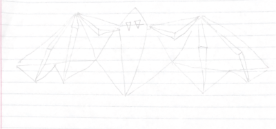

Select disabled
numdot: 0 ms: n/a fps: n/a
Red
Green
Blue
Shape Size
(Circles) Segment Count:
Something Awesome - Select Mode!
Press the select mode button to pick an object and relocate it.
You can also dynamically change its properties, such as its color, size, or segments
You can see if select is enabled or disabled below the canvas.
Here is my reference Image
